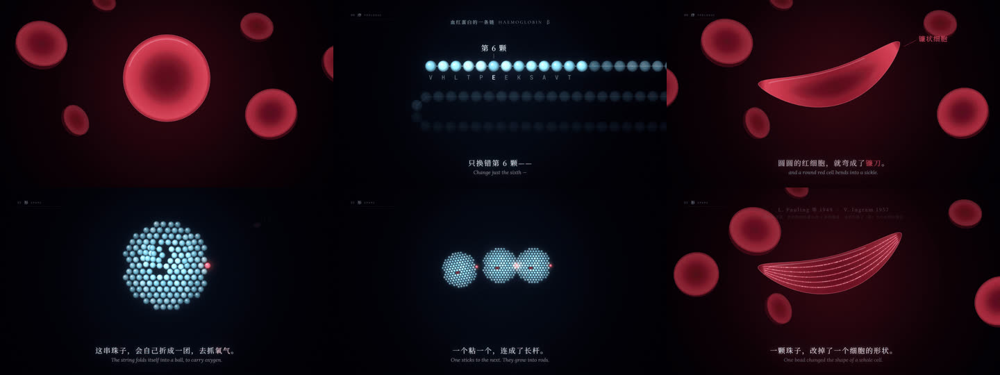
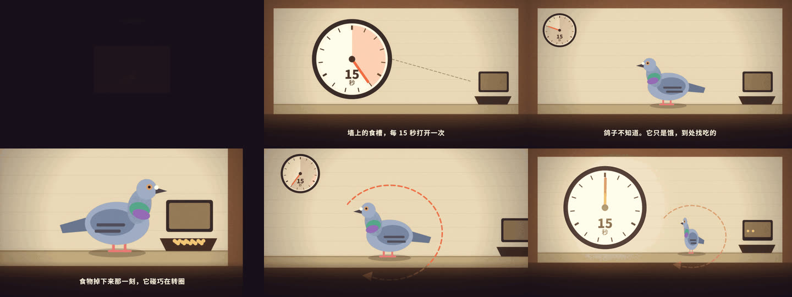
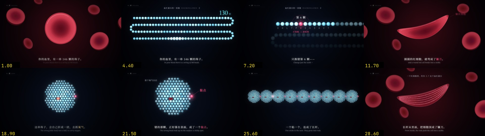
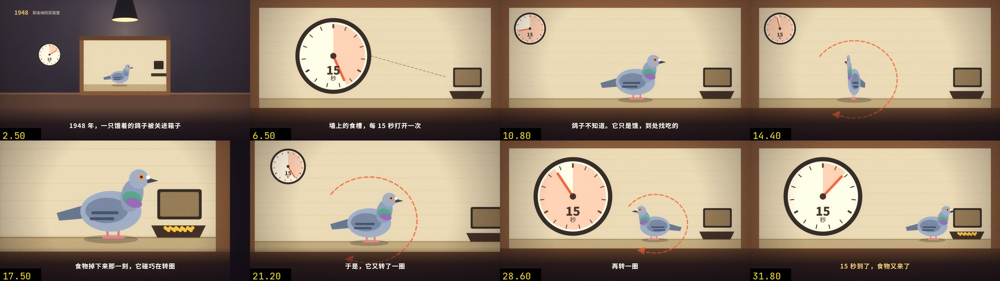
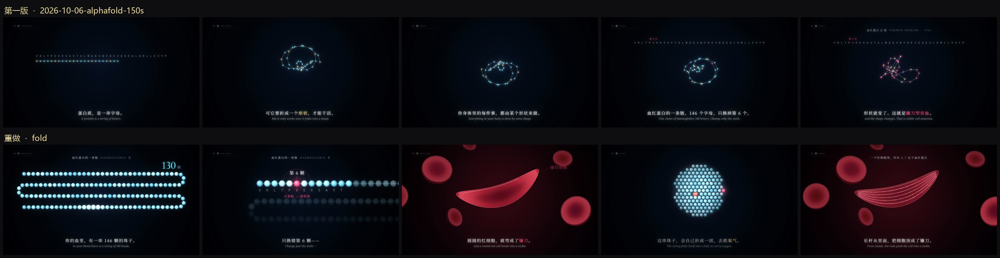

导读：是什么 / 怎么用 / 亮点
- 是什么：一个给 Claude Code 等编程 Agent 用的 skill，拆解抖音爆款「Vibe 知识大赏」类知识短片，复刻两种热门画风，自动写字幕稿、排分镜表、建代码工程、配音效并渲染出片。
- 怎么用：放进
~/.claude/skills/vibe-knowledge-film，装好 Playwright、Chrome、ffmpeg 和开源字体，把文案或选题交给 Agent；它先出约 30 秒样片，确认后再做全片。 - 亮点：两套「世界」——C「夜曲」讲硬核知识、B「寓言」演心理行为；纯 Canvas + JavaScript 逐帧绘制、浏览器截图压视频再混音；SKILL.md 里有「八条规矩」、九步流程与截图自查终检。
vibe-knowledge-film
你一定见过这种视频。最近抖音上爆火的 Vibe 知识大赏，看完收获满满。
这种视频到底怎么做？我做了一个 skill，可以一键生成这种类型的视频。成片在下面。
这个 skill 有两种模式。一个叫「夜曲」，适合讲底层、难懂的知识。另一个叫「寓言」，适合把心理、行为这类逻辑，直观地演给观众看。这两种是我拆了市面上几条爆款之后，总结出来的两种热门画风。
用的时候，直接把写好的文案或者一个选题丢给它。内容确认之后再生成视频。它会自己选对应的画风，写字幕稿，排分镜表，最后建对应的代码工程。先给你一段 30 秒左右的样片，确认清楚才做全片。音效它会配上，BGM 可以自己加。
原理不复杂。用 Canvas 和 JavaScript 把每一帧画出来，驱动浏览器一帧一帧截图，压成视频，再混上声音。字体都是开源的。说白了，就是用代码做这样一条视频。
夜曲：《折叠》
题目是蛋白质折叠，2024 年诺贝尔化学奖。这里是开头 33 秒。

寓言：《鸽子的迷信》
一只鸽子怎么变得迷信。这里是开头 33 秒。

安装
把这个目录放到 Agent 的 skill 目录，文件夹名保持 vibe-knowledge-film。Claude Code 的常见位置是 ~/.claude/skills/vibe-knowledge-film。交给 Agent 的流程在 SKILL.md。
pip install -r requirements.txt
python -m playwright install
python engine/get_fonts.py还需要本机已经安装的 Google Chrome 和 ffmpeg。渲染脚本打开的是本机 Chrome。字体是 SIL Open Font License，不放进仓库，所以要先跑一次 get_fonts.py。
在你自己的项目里建工程，不要建在这个 skill 目录里。
python scripts/new_film.py <工程目录> --world C
python engine/render.py <工程目录> --serve--world 用 C（夜曲）或 B（寓言）。命令和写法见 references/engine.md。
许可
引擎、脚本和文档里的方法说明使用 MIT 许可，见 LICENSE。
references/analysis.md、references/prompts.md 里按成片填好的 brief，以及 examples/stim_B、info_C，字幕和画面设计来自他人的短片，版权属于原作者。这两段是学习对照，不要当成自己的作品发布。
友情链接
附：仓库结构与示例（编者整理）
SKILL.md：交给 Agent 的主流程——「配图不是讲解」「八条规矩」「改到自己满意为止」，以及 0–9 步：看清素材 → 立题与事实表 → 找形象 → 文案与分镜表同写 → 选外观 → 建工程先做最难一镜 → 前 30 秒 → 铺全片 → 声音 → 终检。engine/：vk.js/vk-kit.js绘制引擎、render.py（Playwright 逐帧截图 + ffmpeg）、audio.py（按事件表合成音效）、get_fonts.py。references/：engine、visual-grammar、visualization、worlds、script、prompts、analysis 等写法说明。examples/：两段自有题目样片（fold_C、pigeon_B）、两段学习用复刻（stim_B、info_C，版权属原作者，本页不转载其画面）和组件货架kit_gallery。


